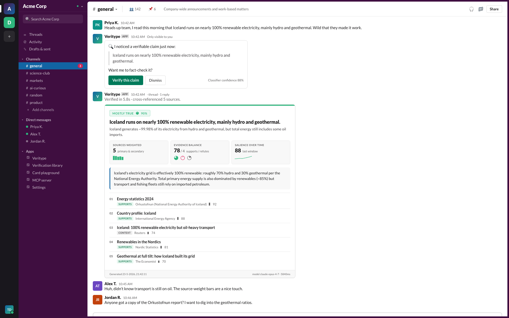
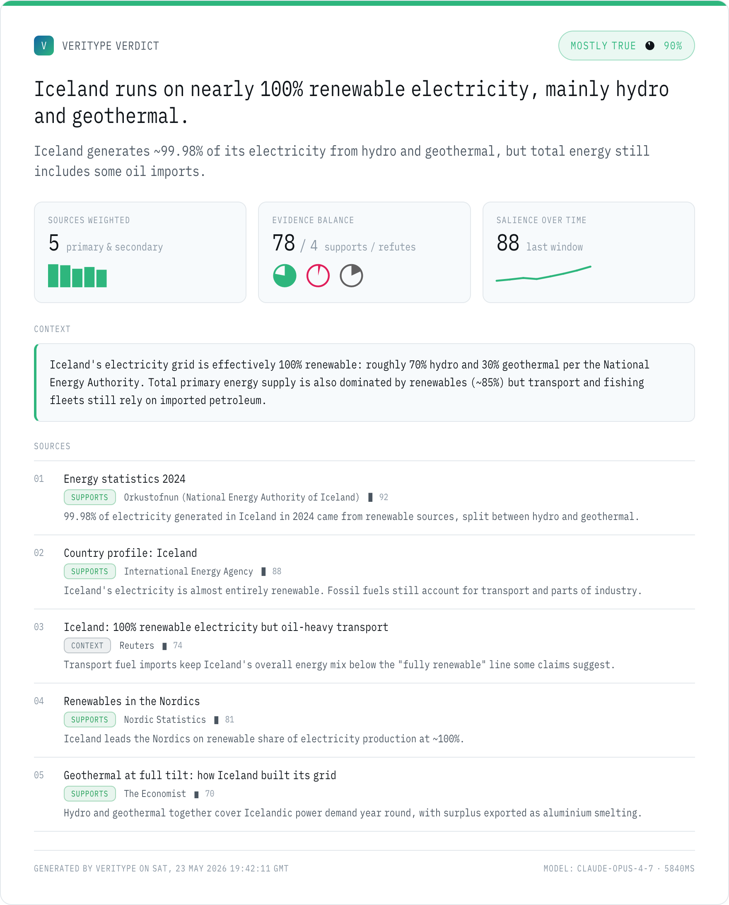
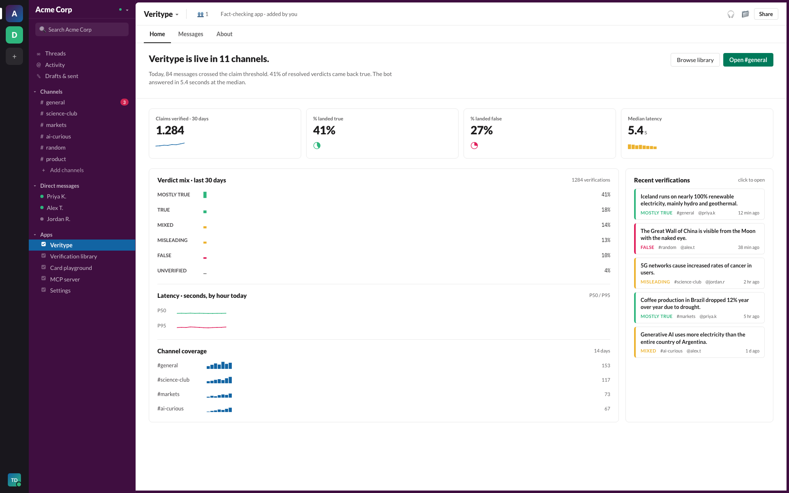
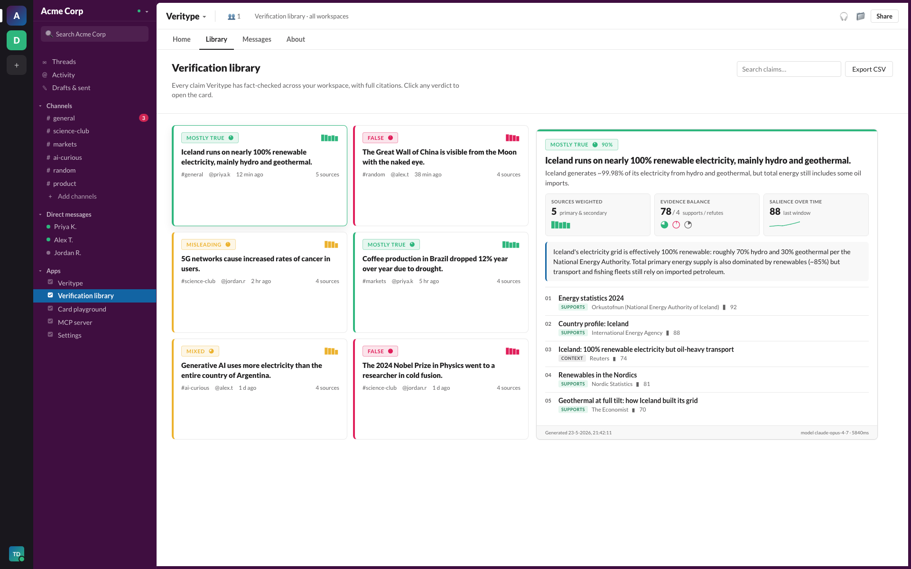
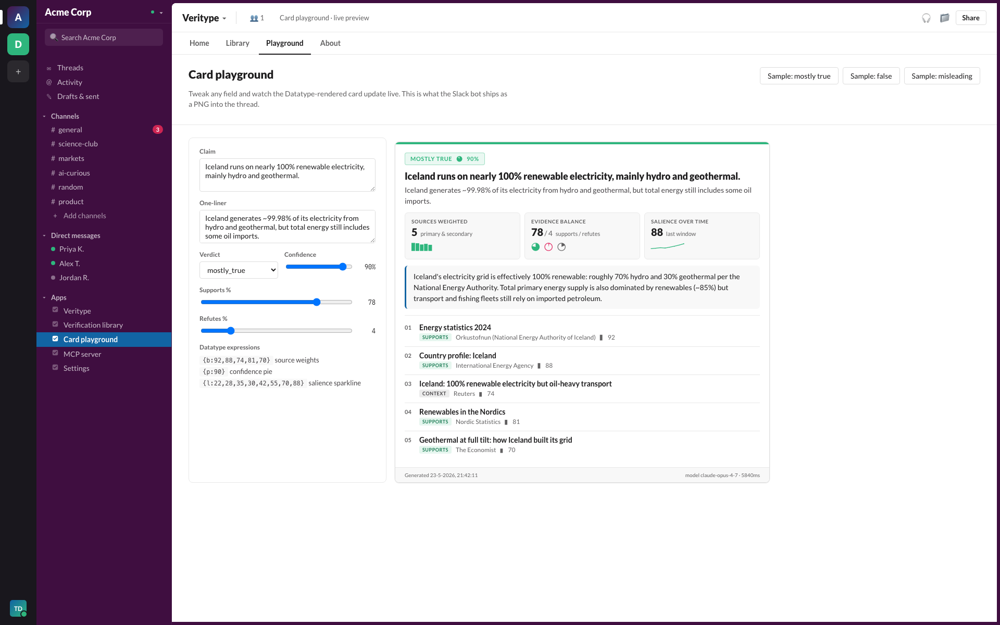
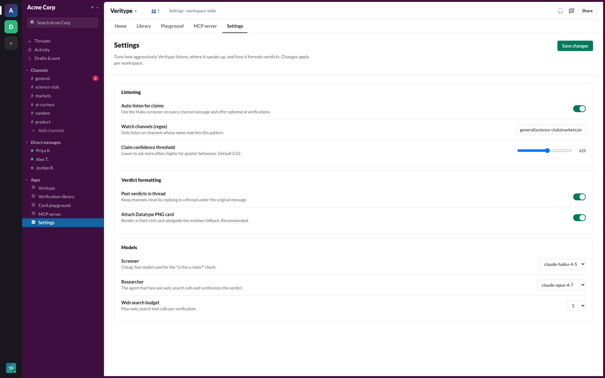

A practical guide for installing, running, demoing, and extending the Veritype Slack agent.
Slack is the substrate that modern teams use to trade information at speed. That speed is also why half-true claims spread before anyone has time to challenge them.
The person who eventually pushes back has to do their homework alone, in a side tab, then disrupt the thread to share it. By that point the original claim has been internalised by three other people and re-shared in a different channel.
People do not stop to verify claims when the cost is opening another tab. People do stop to verify when the cost is a single button. Slack apps that are not in-channel get used twice and forgotten. Veritype lives in the conversation, with the same APP pill any other bot has, and never makes you context-switch.
Three small steps. One feels like the bot is paying attention. One feels like the bot is doing real work. One feels like the bot has visual taste.
| Step | What happens | Model |
|---|---|---|
| Listen | Every channel message hits a triage classifier that decides whether it asserts a verifiable, public-interest claim. If yes, an ephemeral "want me to verify this?" prompt appears. | claude-haiku-4-5 |
| Verify | On accept, a research agent fans out web searches, weighs sources by quality, and synthesises a verdict (TRUE / MOSTLY TRUE / MIXED / MISLEADING / FALSE / UNVERIFIED) with confidence, citations, and context. | claude-opus-4-7 + web_search |
| Render | The verdict is painted into a Datatype-font HTML card and rasterised by Puppeteer. Slack thread gets a PNG plus a Block Kit mrkdwn fallback for accessibility, search, and mobile. | Puppeteer + Datatype |
The font turns text like {b:20,45,70} into a real bar chart through ligature substitution. Every verdict card uses three of these:
{b:…} source-weight bars: primary documents sit taller than blog posts.{p:…} three pies for supports / refutes / context as evidence balance.{l:…} a sparkline of how often the claim has been showing up over time.Everything lives in src/. The Slack bot, the MCP server, and the demo dashboard are three thin shells around a single core module.
If the fact-checking logic only lived inside the Slack handler, a teammate using Claude Desktop could not call it. By isolating it in src/core and re-exposing it through MCP, the same verdict that lands in a Slack thread can be requested from any MCP-aware client.
web_search_20250305 tool used by every verification.
claude-sonnet-4-6 with the same JSON contract.| Component | Role | Path |
|---|---|---|
| Slack Bolt app | Socket-mode app, /verify slash command, message events, button handlers. |
src/slack/app.ts |
| Block Kit blocks | Verdict block layout, mrkdwn fallback, action buttons. | src/slack/blocks.ts |
| Claim screener | Haiku 4.5 layer that decides whether a message contains a verifiable claim. | src/core/screener.ts |
| Researcher | Opus 4.7 + web_search agent. Returns verdict, confidence, weighted sources. |
src/core/researcher.ts |
| Card template | Datatype-styled HTML used by both the PNG renderer and the dashboard. | src/core/cardTemplate.ts |
| Puppeteer renderer | Rasterises HTML cards to PNG with hi-DPI scale factor. | src/core/renderer.ts |
| MCP server | Exposes screen_message, verify_claim, render_verdict_card over stdio MCP. |
src/mcp/server.ts |
| Demo dashboard | Slack-skinned Vite/React UI for screenshots, library browsing, playground. | src/web/ |
| Datatype font | The variable font that makes {b:…}, {l:…}, {p:…} render as charts. |
assets/fonts/ |
| Sample fixtures | Three pre-baked reports used by the playground and CLI renderer. | src/core/sample.ts |
Veritype's most distinctive UX move: it asks first. Every message in a watched channel goes through the Haiku screener, and when a verifiable claim is detected, the bot drops an ephemeral prompt visible only to the speaker. No public noise, no shaming.

Every verdict card is the same template, rendered with the verdict-specific accent color. The three Datatype expressions across the metrics row tell you the whole story without reading a single sentence.

| Element | Tells you |
|---|---|
| Verdict pill | TRUE / MOSTLY TRUE / MIXED / MISLEADING / FALSE / UNVERIFIED with a confidence pie and percentage. |
| Claim line | The standardised one-sentence rephrasing the agent verified, not the raw message. |
| One-liner | The bottom line in 140 characters, no hedging. |
| Sources weighted | Bar chart of every source's quality score. Tall bars are primary documents, short bars are blog re-treads. |
| Evidence balance | Three pie charts for supports / refutes / context. Tells you whether the agent saw mostly corroboration or a real fight. |
| Salience over time | Sparkline showing how often the claim has been appearing across the public record recently. Spikes flag emerging narratives. |
| Context block | Two to four sentences with the key facts, caveats, and dates. |
| Sources list | Up to five sources, each with stance pill, publisher, weight bar, and an excerpt. |
Open the Veritype app in Slack and you land on its Home tab. KPIs render through Datatype, verdict mix, latency, and channel coverage charts are all live. Recent verifications are one click away.

The Library tab is the long-tail memory of the bot. Every verification, across every channel, with the full source list intact.

Tweak any field of a sample report and watch the Datatype card re-render. Great for visually testing new verdict types or alternate copy before shipping.

Drop this into your Claude Desktop config and the three Veritype tools become callable from any MCP-aware client:
// ~/.claude/claude_desktop_config.json { "mcpServers": { "veritype": { "command": "node", "args": ["/path/to/veritype/dist/mcp/server.js"], "env": { "ANTHROPIC_API_KEY": "sk-ant-..." } } } }
Veritype is meant to be quiet by default. The Settings tab is where you make it quieter, louder, or more discerning.

| Setting | When to adjust |
|---|---|
| Auto-listen | Turn off if the team prefers explicit /verify only. On is the default. |
| Watch channels regex | Use to whitelist channels. Common pattern: general|product|markets. |
| Confidence threshold | Default 0.62. Raise to 0.75+ for very quiet channels; lower to 0.45 for high-signal places like #science-club. |
| Post in thread | Default on. Off is for channels where the team wants verdicts in-line. |
| Attach PNG card | Default on. Off only if you have a workspace-wide rule against image attachments. |
| Researcher model | Opus 4.7 is the default. Sonnet 4.6 is the fallback and is ~30% cheaper. |
| Web-search budget | 5 is a good ceiling. 3 for cost-sensitive workspaces, 8+ for very contested claims. |
web_search_20250305 tool.# 1. clone and install git clone https://github.com/timdries/veritype.git cd veritype npm install # 2. configure env cp .env.example .env # fill in ANTHROPIC_API_KEY, SLACK_BOT_TOKEN, SLACK_APP_TOKEN, SLACK_SIGNING_SECRET
docs/slack-app-manifest.yaml.connections:write.# start the Slack agent (Socket Mode) npm run dev:slack # start the demo dashboard (optional) npm run dev:web
Type /verify Iceland runs on 100% renewable electricity in any channel the bot is a member of. The verdict card lands in thread within ~6 seconds.
npm install; if behind a corporate proxy set PUPPETEER_DOWNLOAD_BASE_URL. If the bot is silent, double-check the bot is invited to the channel and that the channel name matches the VERITYPE_WATCH_CHANNELS regex.
src/
core/ shared brain (screener, researcher, renderer, types, samples)
slack/ Bolt app + Block Kit blocks
mcp/ stdio MCP server wrapping the same core
web/ Vite + React dashboard (Slack-skinned, demo + screenshots)
assets/
fonts/ Datatype woff2 (Regular / Medium / SemiBold / Bold)
docs/
screenshots/ in-app screenshots, sample verdict cards
manual/ operator manual sources + rendered PDF
deck/ pitch deck (.pptx + .pdf)
The Veritype code is MIT. The Datatype font is Apache 2.0; see franktisellano/datatype for the source and full license text.
Veritype is the Slack-native fact-checker for teams that move fast on shared information. Coded agent, MCP-ready, chart-rich, ephemeral when it should be, in-thread when it counts.
The repo, the demo, the deck, and this manual are all linked from the README. If anything is unclear, open an issue or DM Tim.